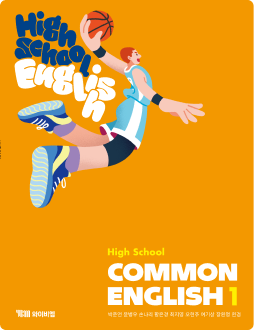

수행평가 일정
11월 4일(수)서·논술형 수행평가 · 고1 3개 반
이용 권한이 확인된 지문으로 서·논술형 평가를 조립해요.
- 지문 선택
- 서·논술형 문항
- 3루브릭
- 4예시답안
지문 이용 권한 확인Lesson 3 Reading 지문 자리 · 목업용 예시 문장
When Mina moved to a new school, she met classmates from five different countries. At lunch, they shared dishes from home and taught each other simple greetings. Mina realized that every difference was a chance to learn something new. Soon, the class started a Culture Day, where everyone could introduce their own traditions.
문항 1 · 서술형 10점 AI 변형원본 · 10차시 Writing (Write on Your Own)
Mina의 반 학생들이 서로의 문화를 알게 된 방법 두 가지를 본문에서 찾아 우리말로 쓰고, 자신의 학교에서 다양성을 존중할 수 있는 방법을 영어 2문장으로 쓰시오.
바뀐 부분 원본 활동에 ‘자기 학교 적용’ 조건과 ‘영어 2문장’ 조건을 추가했어요.
루브릭 학교 기준에 맞게 고칠 수 있어요
| 평가 요소 | 상 | 중 | 하 | 배점 |
|---|---|---|---|---|
| 내용 | 서로의 문화를 알게 된 방법 두 가지를 본문에서 정확히 찾음 | 하나만 찾음 | 찾지 못함 | 4 · 2 · 0 |
| 적용 | 자기 학교 상황에 맞게 구체적으로 제안 | 제안이 일반적임 | 제안이 없음 | 3 · 2 · 1 |
| 언어 사용 | 문법·어휘 오류 없이 2문장 완성 | 오류 1~2개 | 오류 3개 이상 | 3 · 2 · 1 |
출처 · 수정 이력
- 10/20지문 선택Lesson 3 Reading 지문 · 이용 권한 확인
- 10/20AI 문항 초안10차시 Writing 활동을 서·논술형으로 변형
- 10/21선생님 수정조건 1개 추가 · 배점 10점으로 조정
- 10/21루브릭 조정언어 사용 기준을 학교 기준으로 수정
검수 체크
지문 이용 권한 확인
교과서 성취기준 연결
바뀐 부분 표시
YBM 서술형 평가와 겹침 확인
예시답안 검토 남음
내보내기
평가 후 학생 답안 → AI 1차 채점 → 선생님 확정 → 세특 문구 초안으로 이어져요.